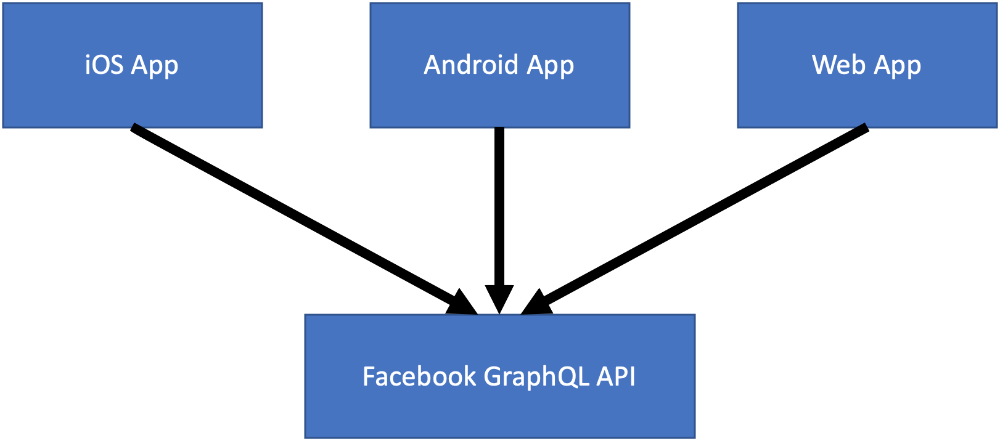
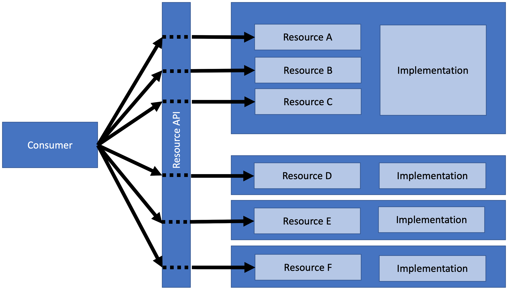
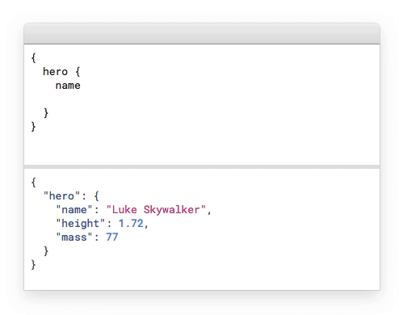

(2) Summary
Most APIs today are using the resource style of REST, but GraphQL still is a trending
technology and increasingly considered as a way to design and build APIs. We take
a structured look at the differences in style, the differences in use cases, and the
differences it takes behind the scenes to make a good choice between REST and GraphQL.
The goal of this presentation is not to claim that one approach is better than the
other, but to clearly analyze how they differ, why that matters, and how that understanding
can help you to make a good choice for your API.
REST vs. GraphQL: A Question of Style
(7) APIs Crash Course
- APIs are the connective fabric of modern IT
- API First is the radical notion to only interact through APIs
- Every capability has an API that is its only accessible interface
- The only technical interconnection is through exposing/consuming APIs
- APIs aligned with business then also become organizational interconnections
- Microservices take APIs to the next level
- API implementations need to be self-contained and individually deployable
- Microservices allow flexible changes, deployment and scaling
- Getting APIs right becomes an essential part of architecture
(8) Facebook Apps and API

(9) Social Graphs are Large and Complex

(10) API for Facebook Apps
- Facebook apps did not work well with the existing API
- Chatty because UX is based on fetching many resources
- Overfetching because resources are represented in a default way
- Different ways to address the observed problems
- Make REST resources more flexible to allow filtering and/or embedding
- Start using the backends-for-frontends pattern for different apps
- Create a flexible model that supports queries into the social graph
(11) [https://www.youtube.com/watch?v=bWFXGHXo_pY]
(12) REST: Resource Style

(13) GraphQL: Query Style

(14) GraphQL: A New API Foundation

- [https://graphql.org/] as a query-oriented API language
- Typically served over HTTP like REST APIs
- Based on interactions with a single API endpoint
- Define and expose a data model
- The API is defined by exposing a data model (and possibly additional operations)
- Consumers query into the data model (or may use the additional operations)
(15) GraphQL Request/Response Example

(16) For Your Consideration…
- Started by Facebook as a way to optimize chatty API traffic
- [https://developers.facebook.com/docs/graph-api/] does not use GraphQL
- Facebook has centralized governance over all components in the API scenario


(9) Social Graphs are Large and Complex